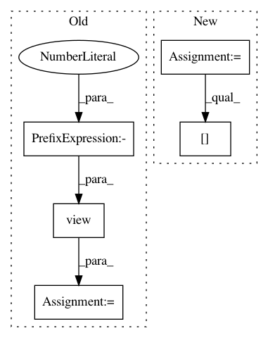

f93beff338925cc1bf1b3ff1b32a2c440a4c9427,tests/_tests_scripts/z_mvp_mnist_gan.py,CustomRunner,_handle_batch,#CustomRunner#Any#,18
Before Change
Docs.
images, _ = batch
images = images.view(images.size(0), -1)
bs = images.shape[0]
z = torch.randn(bs, 128).to(self.device)
generated_images = self.model["generator"](z)
After Change
class CustomRunner(dl.Runner):
def _handle_batch(self, batch):
real_images, _ = batch
batch_metrics = {}
// Sample random points in the latent space
batch_size = real_images.shape[0]
random_latent_vectors = torch.randn(batch_size, latent_dim).to(
self.device
)
// Decode them to fake images
generated_images = self.model["generator"](
random_latent_vectors
).detach()
// Combine them with real images
combined_images = torch.cat([generated_images, real_images])
// Assemble labels discriminating real from fake images
labels = torch.cat(
[torch.ones((batch_size, 1)), torch.zeros((batch_size, 1))]
).to(self.device)
// Add random noise to the labels - important trick!
labels += 0.05 * torch.rand(labels.shape).to(self.device)
// Train the discriminator
predictions = self.model["discriminator"](combined_images)
batch_metrics[
"loss_discriminator"
] = F.binary_cross_entropy_with_logits(predictions, labels)
// Sample random points in the latent space
random_latent_vectors = torch.randn(batch_size, latent_dim).to(
self.device
)
// Assemble labels that say "all real images"
misleading_labels = torch.zeros((batch_size, 1)).to(self.device)
// Train the generator
generated_images = self.model["generator"](random_latent_vectors)
predictions = self.model["discriminator"](generated_images)
batch_metrics["loss_generator"] = F.binary_cross_entropy_with_logits(
predictions, misleading_labels
)
In pattern: SUPERPATTERN
Frequency: 3
Non-data size: 5
Instances
Project Name: catalyst-team/catalyst
Commit Name: f93beff338925cc1bf1b3ff1b32a2c440a4c9427
Time: 2020-04-21
Author: scitator@gmail.com
File Name: tests/_tests_scripts/z_mvp_mnist_gan.py
Class Name: CustomRunner
Method Name: _handle_batch
Project Name: OpenNMT/OpenNMT-py
Commit Name: 3a71ecffa3a8aff931a0ff865434e11e8ea08ba3
Time: 2018-10-22
Author: guillaume.klein@systrangroup.com
File Name: onmt/translate/translator.py
Class Name: Translator
Method Name: _fast_translate_batch
Project Name: maciejkula/spotlight
Commit Name: 70e4d7fe60a9658bb27b9f5fb67592a1222b2ec3
Time: 2017-07-06
Author: maciej.kula@gmail.com
File Name: spotlight/sequence/representations.py
Class Name: CNNNet
Method Name: user_representation